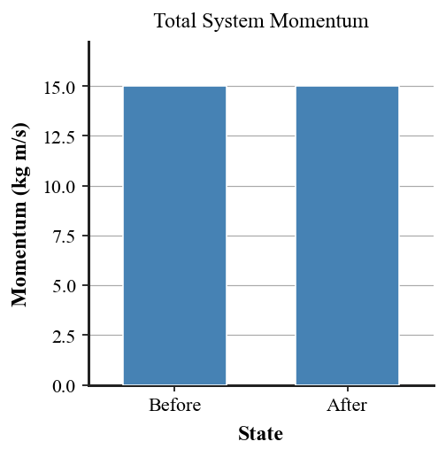
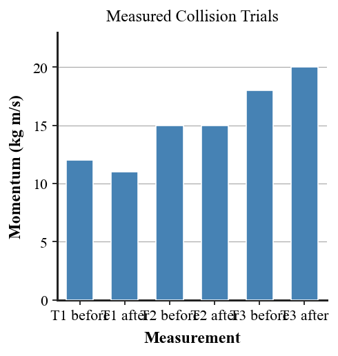

Practice focus: Use system boundaries and before-and-after momentum to analyze collisions, recoil, explosions, and interacting objects.
Define conservation of momentum in words.
What condition must be small or absent for total momentum of a chosen system to remain constant during a short interaction?
In a collision analysis, what does the word system mean?
Classify the forces two carts exert on each other during a collision as internal or external to the two-cart system.
A cart collision occurs on a nearly frictionless track. Is friction more likely an internal or external influence on the two-cart system?
Name the collision type in which two objects stick together after impact.
State whether total system momentum can stay constant even when each individual object’s momentum changes.
A student on a skateboard throws a backpack forward. Name the backward-motion effect on the student.
An object initially at rest explodes into two pieces. What is the total momentum of the system before the explosion?
Complete the symbolic statement: $p_{before}=\_\_\_\_\_\_\_\_$.
Use the before-and-after graph to state whether total momentum is approximately conserved.

If one cart’s momentum increases during a collision, must total system momentum increase? Answer yes or no and name the condition that matters.
Cart A has mass 2 kg and velocity 4 m/s right. Cart B has mass 1 kg and velocity 3 m/s left. Calculate the total momentum before the collision using right as positive.
A 1 kg cart moving 6 m/s right sticks to a 2 kg cart at rest. Determine total momentum before and use conservation to determine the speed of the combined 3 kg cart after.
Two carts have total momentum 8 kg·m/s right before a collision. If external impulse is negligible, state the total momentum after and explain why individual momenta may differ.
An object at rest explodes into two pieces. One piece has momentum 12 kg·m/s right. Determine the momentum of the other piece if the system was initially at rest.
A skater at rest throws a 4 kg backpack forward at 5 m/s. Determine the backpack momentum and state the momentum the skater must have immediately after, ignoring external impulse.
A ball reverses direction after hitting a wall. Explain why including the wall/Earth in the system can be important when discussing momentum conservation.
Use the trial bar chart to identify which trial best supports momentum conservation and which shows the largest mismatch.

A 2 kg cart at 5 m/s right collides and sticks to a 3 kg cart moving 1 m/s left. Calculate total momentum before and the velocity of the combined carts after.
A cannon and cannonball start at rest. After firing, the ball has 60 kg·m/s forward momentum. State the cannon momentum and explain the direction.
Two bumper cars collide while one motor is still pushing. Identify why momentum conservation for the two-car system may be less accurate than on a low-friction track.
Draw or describe a system boundary around two colliding carts and label one internal interaction and one possible external interaction.
A two-cart system has 18 kg·m/s before and 17 kg·m/s after in measured data. Give one realistic measurement or external-force reason for the mismatch.
Two carts collide on a nearly frictionless track. Define the system, identify internal forces, identify possible external forces, and explain why total momentum should be approximately conserved.
A student says, “Momentum conservation means each object keeps the same momentum.” Critique the claim and distinguish individual momentum from total system momentum.
Explain recoil for a skateboarder who throws a backpack forward. Use the system idea and before-and-after total momentum.
Compare a low-friction cart collision with two bumper cars whose motors remain on. Explain why the system boundary and external impulse matter when testing conservation.
Build a complete momentum model for two carts that stick after collision. Define the system, use before-and-after momentum, predict the combined motion, and identify one reason real measurements may not match perfectly.
A set of three collision trials has before/after momentum pairs of 12/11, 15/15, and 18/20 kg·m/s. Evaluate which trial best supports conservation, propose explanations for the mismatches, and state what additional evidence would strengthen the conclusion.